📐 等腰三角形的定义
有两条边相等的三角形叫做等腰三角形。如图，\(AB = AC\)，则△ABC是等腰三角形。
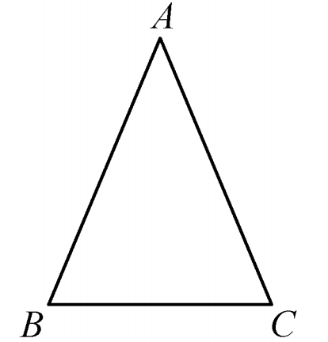
📌 相等的两边叫做腰，另一边叫做底边；两腰夹角为顶角，腰与底边的夹角为底角。
✂️ 做一做 · 折叠发现
剪一张等腰三角形纸片，对折使两腰 \(AB\)、\(AC\) 重叠，折痕为 \(AD\)。你发现了什么？
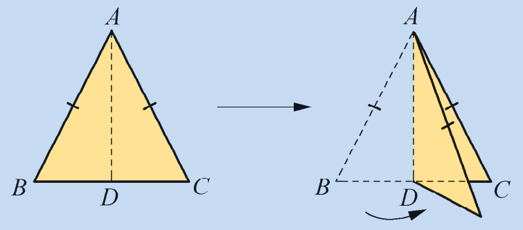
得到性质：等腰三角形的两个底角相等，简写“等边对等角”。
📖 性质定理1：等边对等角
等腰三角形的两个底角相等。（简写：等边对等角）
已知：如图，在△ABC中，\(AB = AC\)。求证：\(\angle B = \angle C\)。

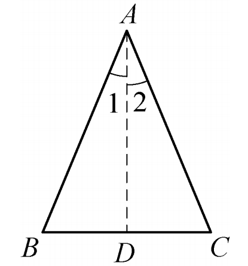
证明： 作 \(\angle BAC\) 的平分线 \(AD\)。
在 \(\triangle ABD\) 和 \(\triangle ACD\) 中，
\(AB = AC\) (已知)，\(\angle BAD = \angle CAD\) (角平分线定义)，\(AD = AD\) (公共边)，
\(\therefore \triangle ABD \cong \triangle ACD\) (SAS)。
\(\therefore \angle B = \angle C\) (全等三角形对应角相等)。
📌 性质定理2：等腰三角形三线合一
等腰三角形顶角的平分线、底边上的中线、底边上的高互相重合。（简称“三线合一”）
由折叠实验及全等证明，可得 \(AD\) 同时是中线、高线和角平分线。
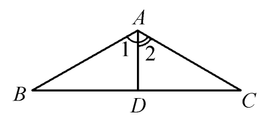
✍️ 几何语言：在△ABC中，\(AB = AC\)，
① 若 \(AD \perp BC\)，则 \(BD = CD\) 且 \(\angle BAD = \angle CAD\)；
② 若 \(BD = CD\)，则 \(AD \perp BC\) 且 \(AD\) 平分 \(\angle BAC\)；
③ 若 \(AD\) 平分 \(\angle BAC\)，则 \(AD \perp BC\) 且 \(D\) 为 \(BC\) 中点。
📝 例1
在△ABC中，\(AB = AC\)，\(\angle B = 80^\circ\)。求 \(\angle C\) 和 \(\angle A\) 的度数。
又 \(\angle A + \angle B + \angle C = 180^\circ\)， ∴ \(\angle A = 180^\circ - 80^\circ - 80^\circ = 20^\circ\)。
📝 例2
如图12.3.5，在△ABC中，\(AB = AC\)，点\(D\)是边\(BC\)的中点，\(\angle B = 30^\circ\)。
(1) 求 \(\angle ADC\) 的度数；(2) 求 \(\angle 1\) 的度数（\(\angle 1 = \angle BAD\)）。
(2) 在Rt△ABD中，\(\angle B = 30^\circ\)，\(\angle ADB = 90^\circ\)， ∴ \(\angle 1 = 180^\circ - 30^\circ - 90^\circ = 60^\circ\)。
🤔 思考1 (图12.3.6)
如图12.3.6所示，我们曾利用尺规作图作出一条线段 \(AB\) 的垂直平分线 \(PQ\)，现在你能证明所得的直线 \(PQ\) 确实是已知线段 \(AB\) 的垂直平分线吗？
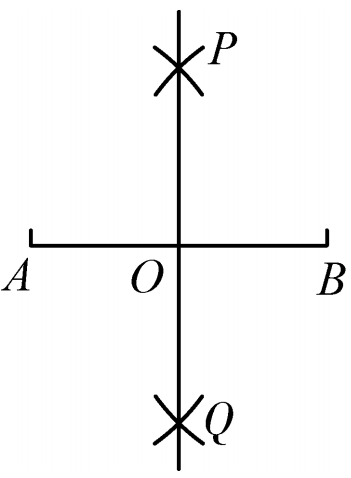
📝 例3
按如图12.3.7所示的尺规作图的作法，证明直线 \(PQ\) 是已知线段 \(AB\) 的垂直平分线。
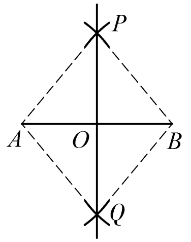
证明： 如图12.3.7，连结 \(PA, PB, QA, QB\)。
由作法知 \(AP = BP\)，\(AQ = BQ\)，\(PQ = PQ\)。
在 \(\triangle APQ\) 和 \(\triangle BPQ\) 中，
\(AP = BP\)，\(AQ = BQ\)，\(PQ = PQ\)，
\(\therefore \triangle APQ \cong \triangle BPQ\) (SSS)。
\(\therefore \angle APQ = \angle BPQ\)。
在等腰 \(\triangle APB\) 中，\(AP = BP\)，且 \(PQ\) 平分 \(\angle APB\)，根据“三线合一”，\(PQ \perp AB\) 且 \(PQ\) 平分 \(AB\)，
因此直线 \(PQ\) 是线段 \(AB\) 的垂直平分线。
🤔 思考2 (图12.3.8)
如图12.3.8所示，我们还曾利用尺规作图过点 \(C\) 作出已知直线 \(AB\) 的垂线 \(CP\)。当点 \(C\) 在直线 \(AB\) 上时，垂线 \(CP\) 即是平角 \(ACB\) 的平分线所在的直线；当点 \(C\) 在直线 \(AB\) 外时，你能证明所作的直线 \(CP\) 确实是直线 \(AB\) 的垂线吗？
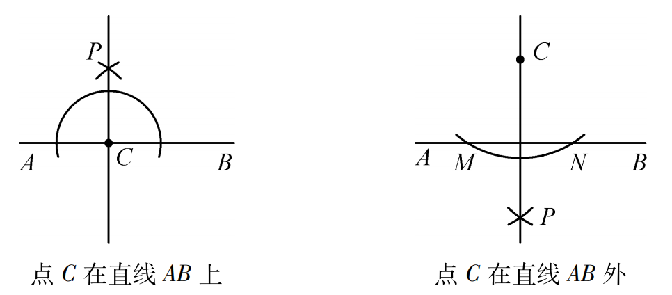
🌟 等边三角形（正三角形）
三条边都相等的三角形叫做等边三角形，也叫做正三角形。由“等边对等角”可得：
等边三角形的各个角都相等，并且每一个角都等于 \(60^\circ\)。
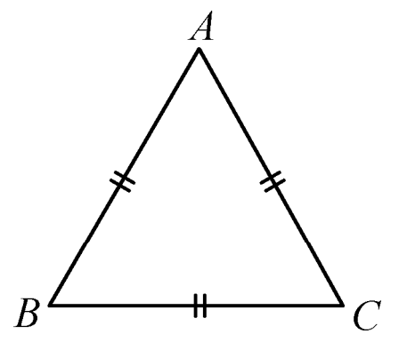
等边三角形是特殊的等腰三角形，也是轴对称图形，有3条对称轴。
📖 读一读 · 等腰三角形的文化之美
等腰三角形在生活中应用广泛，古埃及金字塔的侧面就是等腰三角形，具有稳定的结构。在数学史上，古希腊数学家泰勒斯曾利用等腰三角形的性质测量金字塔的高度。等腰三角形的“三线合一”更是几何证明的利器，体现了数学的对称与简洁美。
《几何原本》第一卷中也有大量关于等腰三角形的命题，例如“等边对等角”与“等角对等边”构成了逻辑闭环。这些知识推动了建筑、工程和天文学的发展。
✍️ 课堂练习
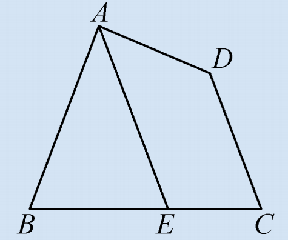
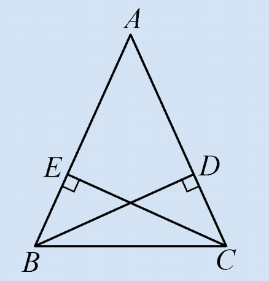
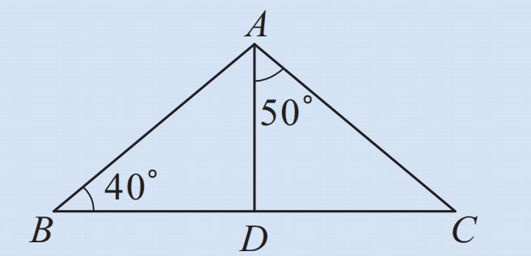
📌 课堂小结
- 等腰三角形性质1：等边对等角（两个底角相等）。
- 等腰三角形性质2：三线合一（顶角平分线、底边中线、底边高线互相重合）。
- 等边三角形（正三角形）：每个内角都等于60°，是特殊的等腰三角形，有三条对称轴。
- 证明方法：构造全等三角形（作角平分线或中线）是证明等腰三角形性质的常用技巧。
- 尺规作图依据：等腰三角形“三线合一”和“到线段两端距离相等的点在线段垂直平分线上”。
🧠 数学思想 · 核心素养
• 转化思想： 将等腰三角形的性质证明转化为三角形全等；
• 分类讨论： 等腰三角形中“顶角”与“底角”的位置分类；
• 轴对称思想： 等腰三角形是轴对称图形，利用对称性获得几何直觉；
• 演绎推理： 从基本事实出发，严谨证明几何定理，培养逻辑推理能力。
• 数学建模： 用等腰三角形性质解决实际测量问题（如金字塔高度、测架水平）。